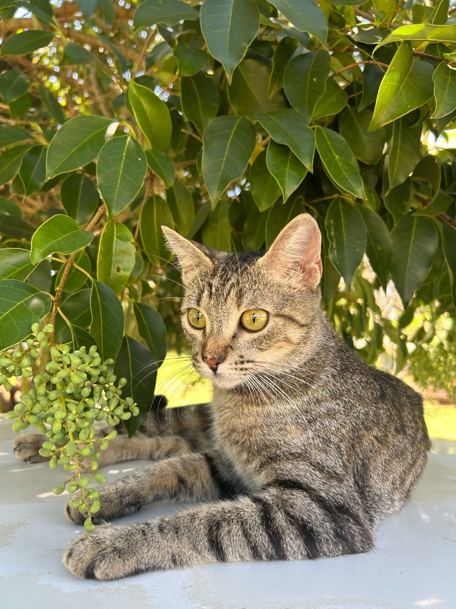
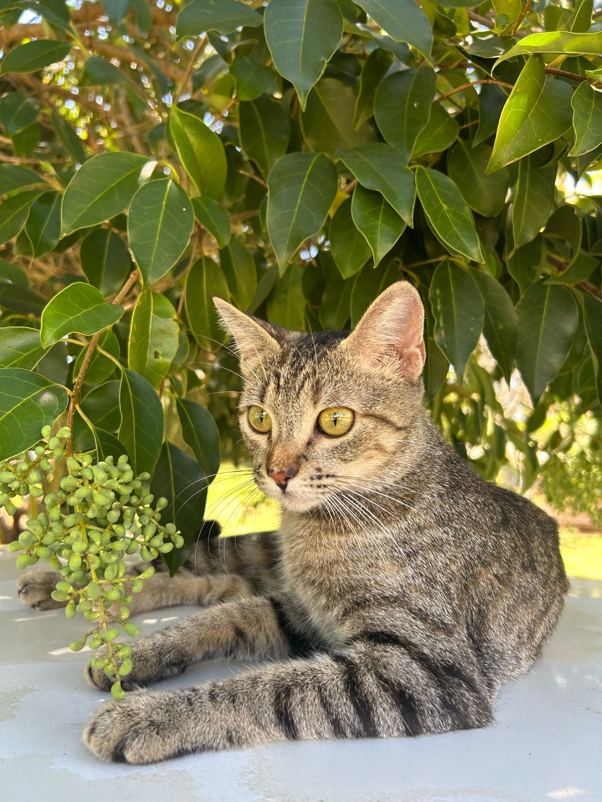
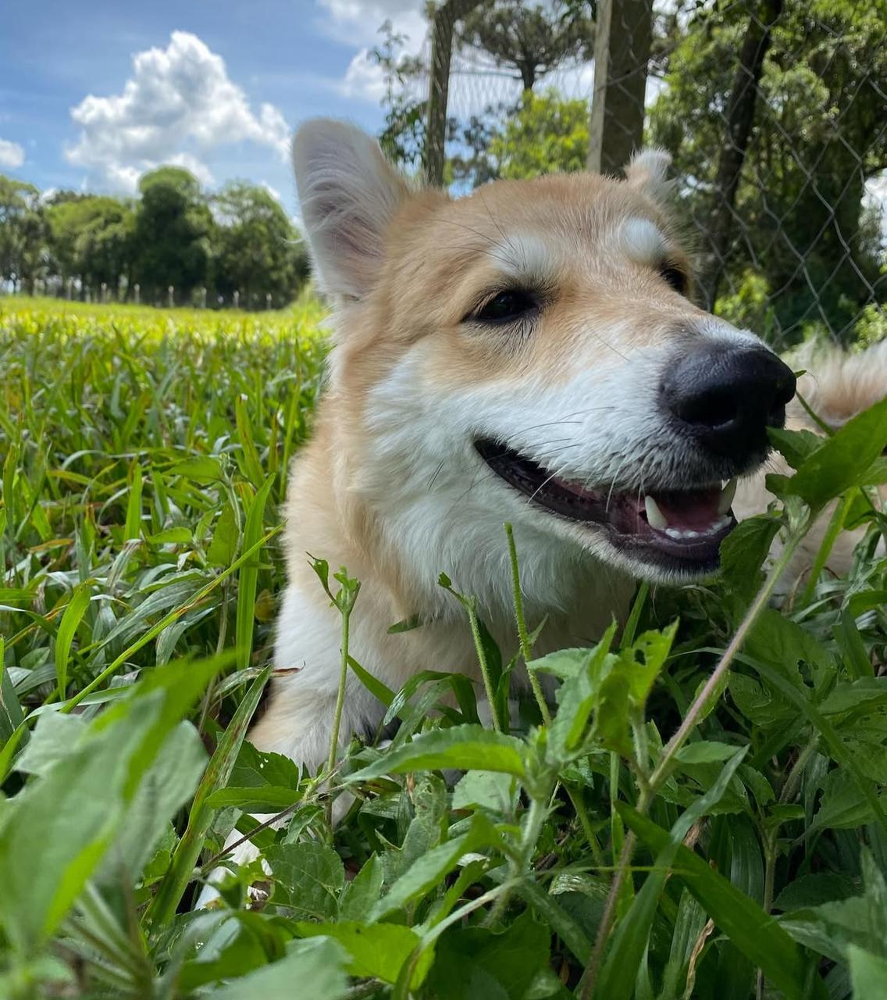
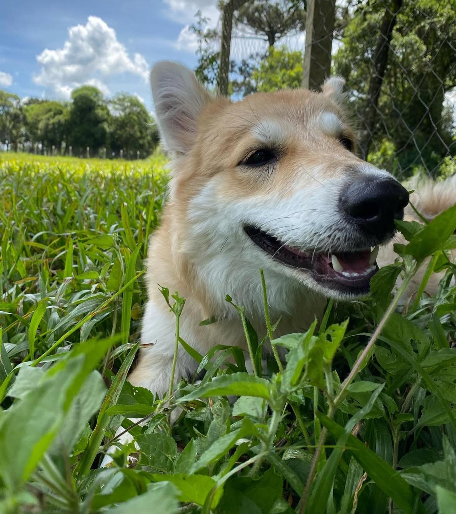

SEU MELHOR AMIGO PODE ESTAR AQUI!
APA, Associação de Proteção aos Animais
transforme vidas, adote um novo amigo.
Sobre nós

Somos uma Associação dedicada a transformar vidas caninas e promover o bem-estar animal. Em um mundo onde tantos animais enfrentam o abandono e a negligência, A APA, Associação de Proteção aos Animais nasceu da necessidade de oferecer uma segunda chance a cães desamparados. Cada animal que resgatamos tem uma história única – alguns chegam doentes, outros foram vítimas de maus-tratos, e há aqueles que nunca tiveram a chance de experimentar o carinho humano. Mas todos, sem exceção, têm um coração cheio de amor para dar, e ver a alegria deles não tem preço.
Nosso trabalho
Nosso trabalho não para por aí. Além de resgatar e cuidar dos cães, também promovemos campanhas de adoção, conscientização sobre a posse responsável e a importância da castração. Acreditamos que cada pequeno gesto pode fazer uma grande diferença na vida desses animais.
Nossa paixão pelos cães é o combustível que impulsiona nossa missão diária. Trabalhamos incansavelmente para proporcionar uma vida melhor para os cães abandonados e desamparados, buscando sempre encontrar lares amorosos para cada um deles. Acreditamos que todos os cães merecem uma segunda chance.
Nossos Anjinhos!
 

 



Como ajudar
Você pode fazer a diferença na vida desses animais de várias maneiras. Seja adotando um cão, tornando-se um voluntário ou fazendo uma doação, sua contribuição é valiosa e impacta diretamente a vida dos nossos amigos de quatro patas.
Se você está pensando em adotar, venha nos visitar! Temos muitos cães adoráveis esperando por um lar amoroso. Cada adoção é uma vitória e uma nova chance para esses animais incríveis.
Juntos, podemos criar um mundo melhor para os cães e garantir que eles tenham a vida cheia de amor e cuidados que merecem.
Aqui você encontrará a oportunidade de mudar a vida de um cachorro e encher o seu coração de amor e alegria. Nós acreditamos que a adoção é um gesto poderoso, capaz de transformar vidas e criar laços de amor verdadeiro. Cada cachorro em nosso abrigo tem uma história única e espera ansiosamente por alguém especial para compartilhar momentos incríveis. Ao adotar um cachorro, você não apenas ganha um companheiro leal, mas também oferece a ele a chance de uma nova vida repleta de cuidado, afeto e uma família para chamar de sua. Deixe-se encantar pelos olhos brilhantes e pelos rabos abanando, e faça parte dessa jornada de amor.